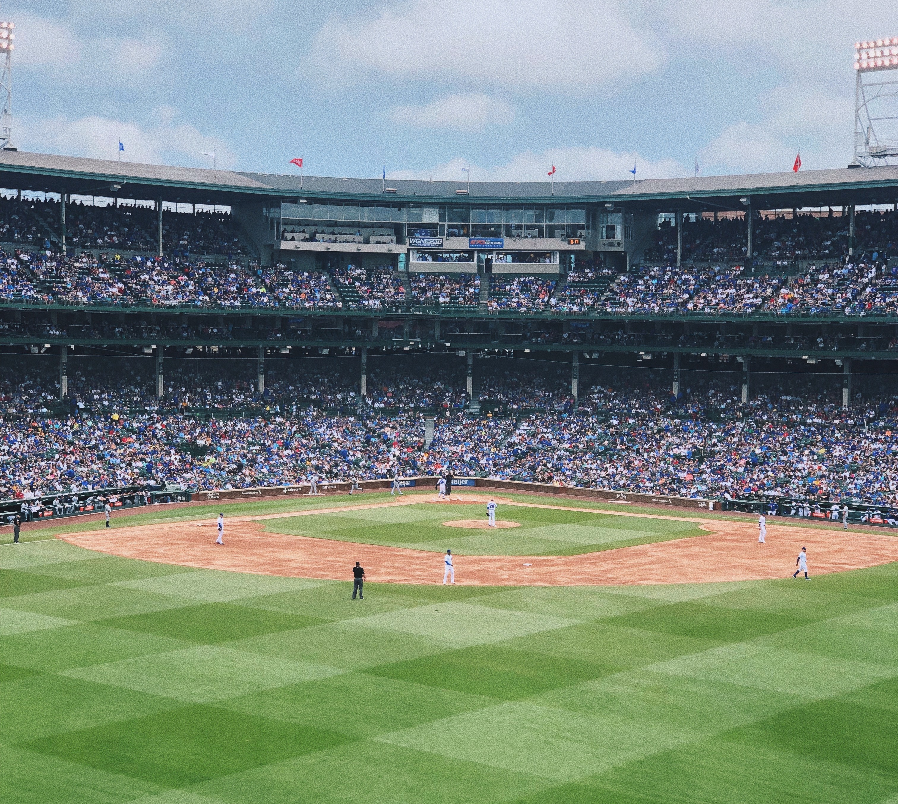

I love to travel, but I also love to be at home. Home is both Chicago and Ann Arbor for me. Being a senior is bittersweet because I feel so beyond lucky to have lived in A2 for the past four years. Last winter, I was able to study abroad in Sydney, Australia, which was a lifelong dream of mine.

